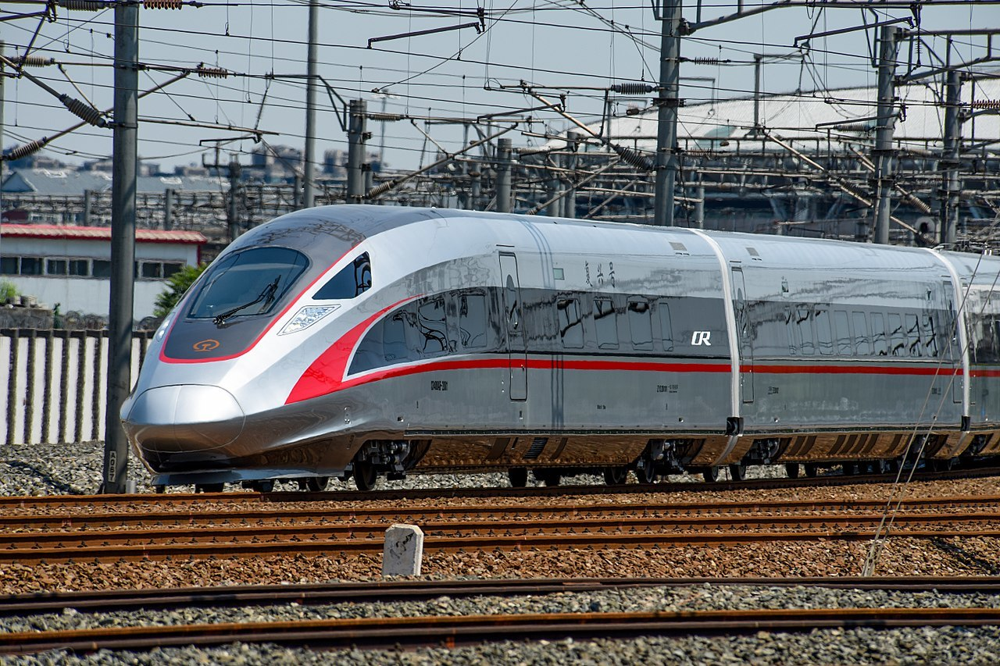
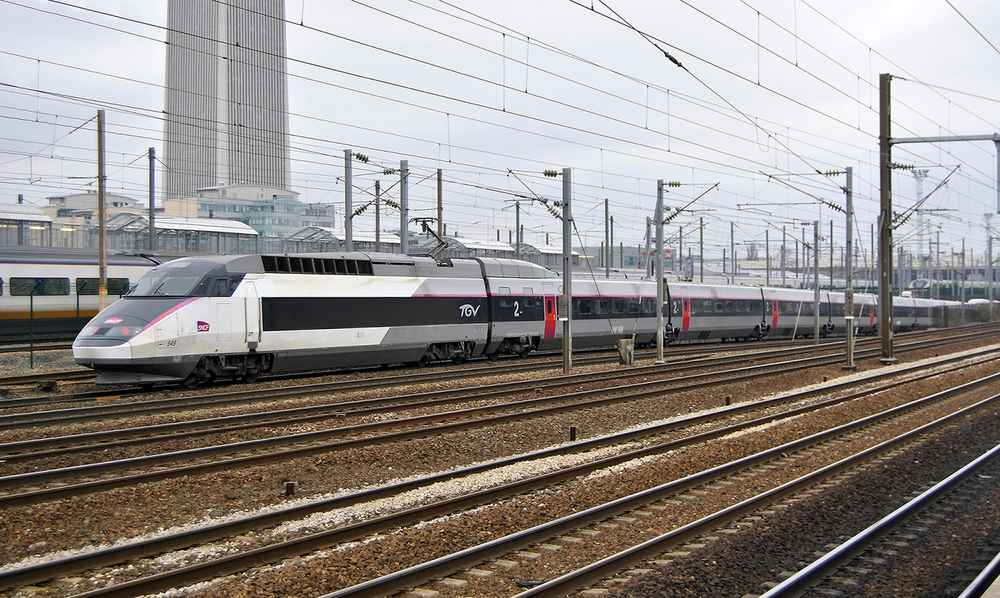
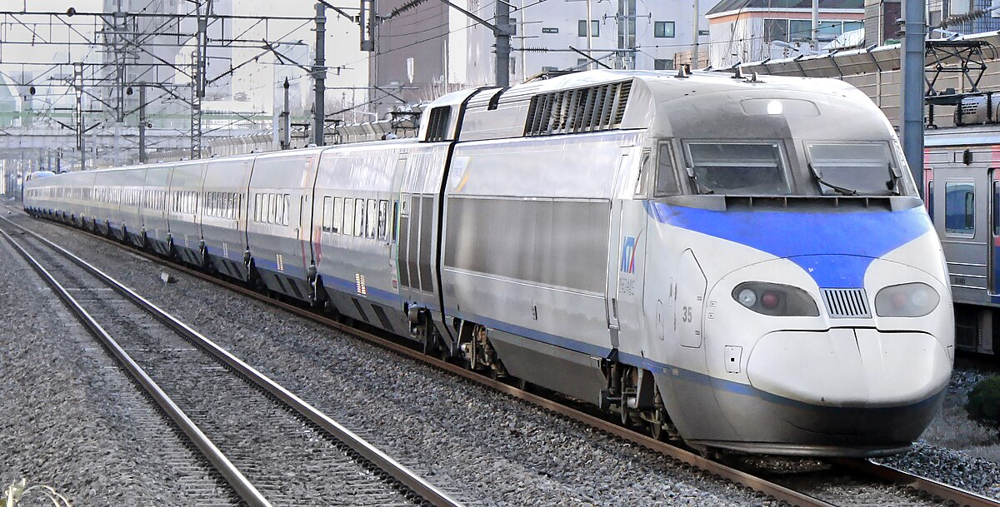
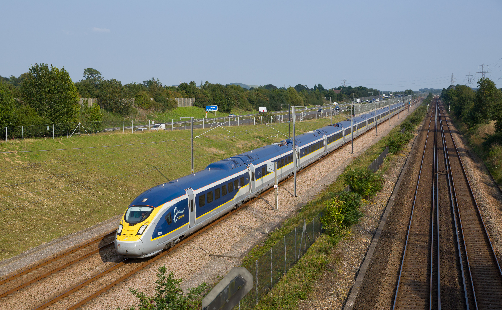
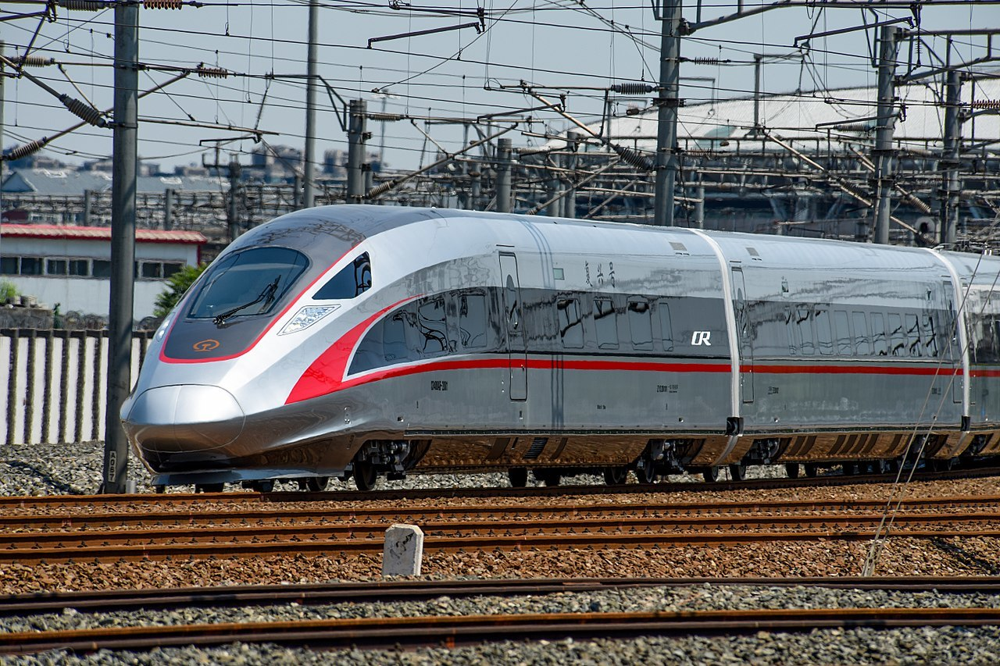
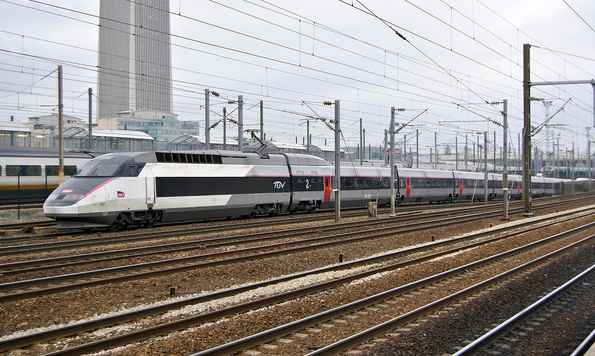
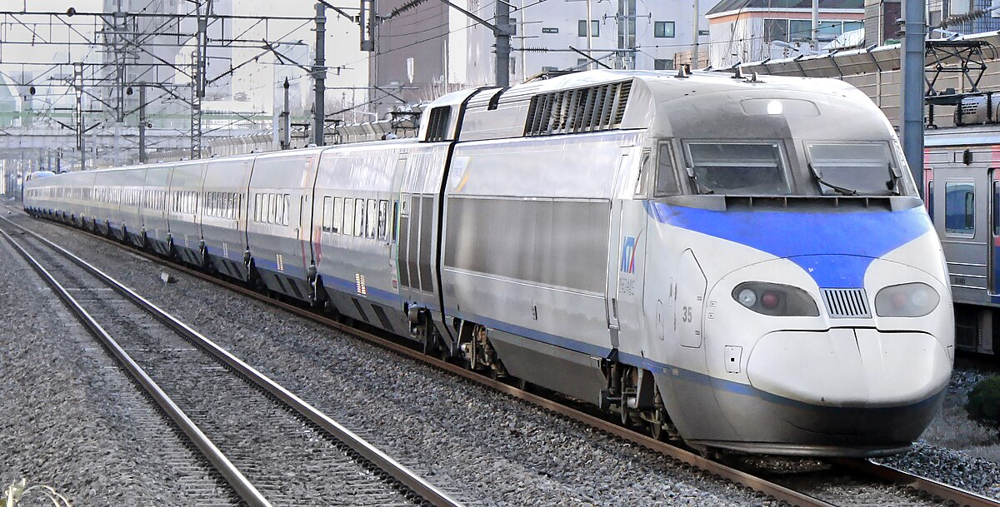
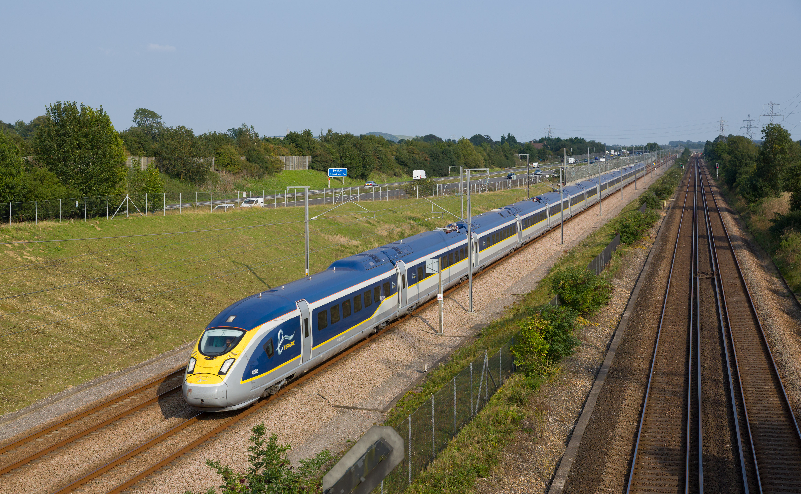

7 High-Speed Trains Around the World

Beijing-Tianjin, and Beijing-Hong Kong

Paris-Marseille, and Paris-Nice


and Madrid-Malaga

Korea

Frankfurt-Munich, and Frankfurt-Cologne

Kingdom
and London-Brussels
| Rank | Train | Country | Top Speed | Routes | Years in service |
|---|---|---|---|---|---|
| 1 | Fuxing Hao  |
China | 350 km/h (217 mph) | Multiple routes, including Beijing-Shanghai, Beijing-Tianjin, and Beijing-Hong Kong |
Since August 2016 |
| 2 | TGV  |
France | 320 km/h (199 mph) | Multiple routes including Paris-Lyon, Paris-Marseille, and Paris-Nice |
Since September 1981 |
| 3 | E5 Series Shinkansen |
Japan | 320 km/h (199 mph) | Tokyo-Aomori | Since March 2011 |
| 4 | AVE S-103 |
Spain | 310 km/h (193 mph) | Multiple routes, including Madrid-Barcelona and Madrid-Malaga |
Since June 2007 |
| 5 | KTX-I  |
South Korea |
305 km/h (190 mph) | Multiple routes, including Seoul-Busan | Since April 2004 |
| 6 | ICE 3 |
Germany | 300 km/h (186 mph) | Multiple routes, including Berlin-Frankfurt, Frankfurt-Munich, and Frankfurt-Cologne |
Since May 2000 |
| 7 | Eurostar e320  |
United Kingdom |
300 km/h (186 mph) | Multiple routes, inclduing London-Paris and London-Brussels |
Since November 2015 |